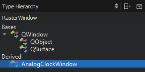

Type Hierarchy
To view type hierarchy of a class:
- Right-click a class in the code editor.
- Select Open Type Hierarchy or press Ctrl+Shift+T.

To navigate in the type hierarchy:
- Double-click a class or select it.
- Select Open Type Hierarchy in the context menu.
The view highlights the previous class.
The definition of the selected class opens in the code editor. You can also select Open in Editor in the context menu to open it.